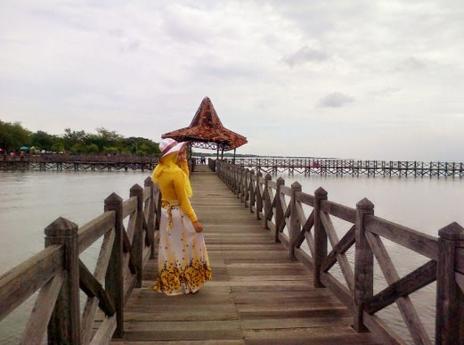

Pantai Bentar merupakan sebuah pantai utara di Kabupaten Probolinggo yang memiliki keindahan objek yang sangat mempesona. Karena keindahan objek pemandangan yang disajikannya, pantai ini cukup terkenal hingga ke luar daerah. Jangan heran apabila anda berkunjung kesini anda akan menjumpai banyak wisatawan yang bukan berasal dari Probolinggo.
Spot Favorit di Pantai Bentar untuk Fotografi
Tempat Paling favorit bagi wisatawan yang berkunjung ke tempat ini adalah jembatan kayu sepanjang 50 meter yang menjorok ke tengah laut. Dengan background laut lepas, jembatan kayu ini memang menawarkan spot yang cukup baik untuk “selfie”. Tidak hanya para remaja, bahkan para ibu ibu pun tidak sedikit yang berfoto ria di tempat ini. Fasilitas yang tersedia seperti toilet, tempat parkir, dll sangatlah memadai. Sehingga hal tersebut membuat wisatawan yang menghabiskan liburan di pantai ini merasa nyaman dan betah.
Pantai Bentar dipenuhi dengan pepohonan yang rimbun, sehingga para wisatawan yang merasa kepanasan akibat sinar matahari yang menyengat di siang hari dapat berteduh di sela sela pepohonan tersebut. Selain itu wisatawan yang ingin menikmati jajanan khas Probolinggo juga dapat rehat di warung warung kecil yang berada di area pantai.
Wahana permainan lain yang juga tidak kalah menarik yaitu menaiki kereta pantai. Khusus bagi pengunjung yang liburan bersama keluarga dapat mengajak buah hati nya untuk berkeliling pantai menggunakan kereta ini. Tiket yang harus dibayarkan ketika hendak naik kereta ini juga relatif murah, yaitu hanya Rp. 4000.
Harga Tiket Masuk Pantai Bentar
Meskipun pantai ini cukup populer, namun tarif tiket masuknya cukup murah, yaitu hanya Rp 4.000 untuk orang dewasa dan Rp. 3.000 untuk anak anak. Dengan harga tiket yang ramah kantong, Wisata Pantai Bentar menjadi pilihan yang tepat untuk destinasi liburan bersama keluarga.